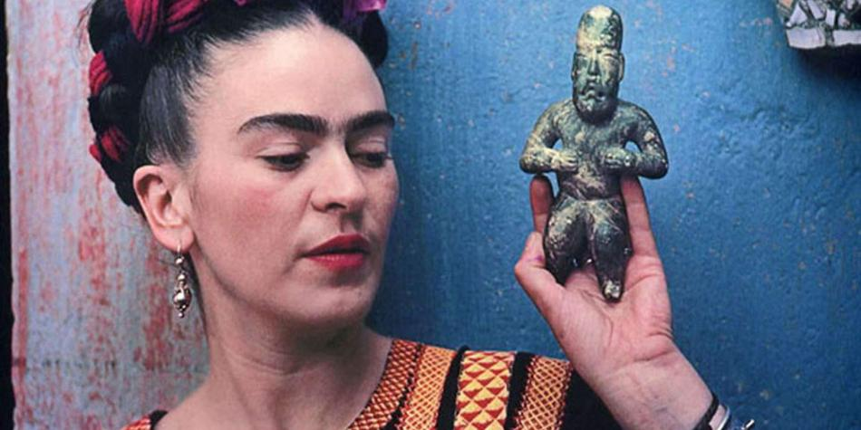
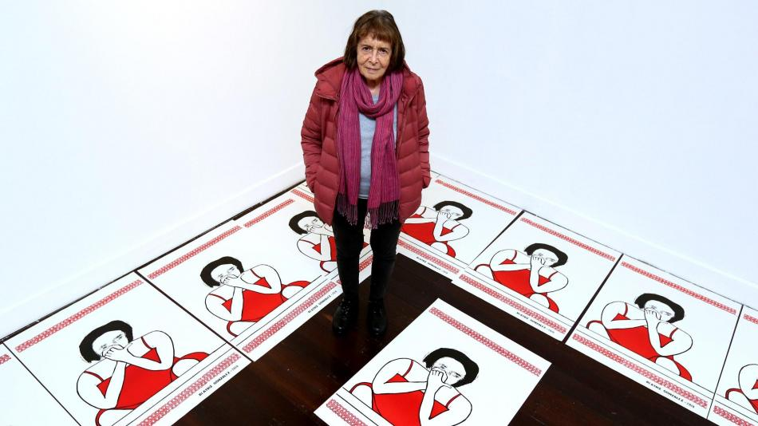
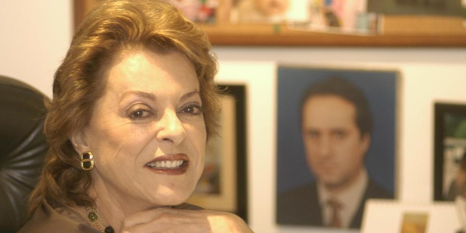
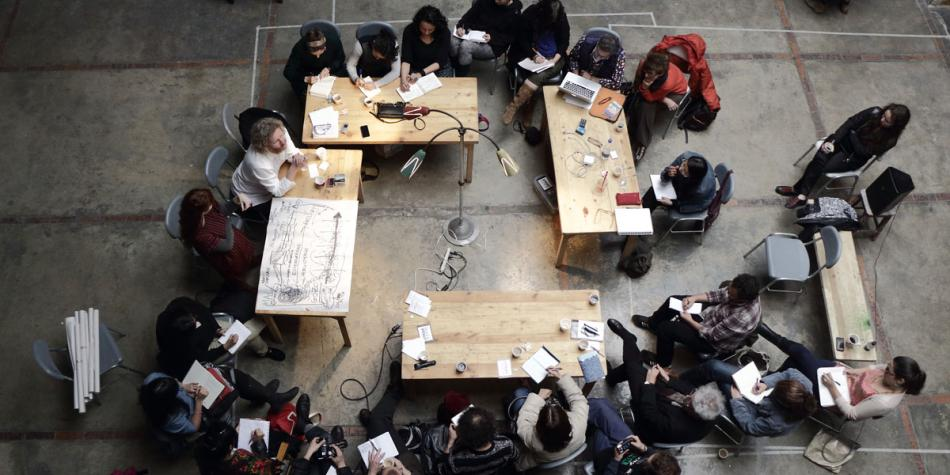
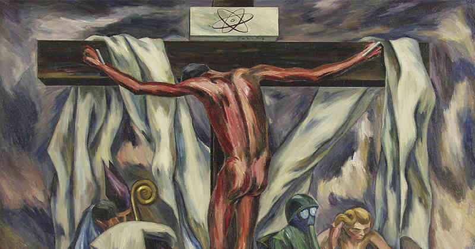

‘La escritura y el arte son antídotos contra la muerte’
“Uno podría escribir para sí mismo o para los amigos, sin el afán de querer ser leído por mucha gente”, le dije una tarde. “¿No es lo que hacemos ya?”, preguntó. “La amistad es la mejor manera de reunirse alrededor de la ficción, más aún cuando la ficción es la mejor de las realidades posibles para los que sabemos que en un libro se organiza el caos del mundo que espera al otro lado de la página”.
'Los elogios de la tribu', es una novela de 300 páginas acerca de Ricardo Torres, un escritor fallecido tan inmenso que aún después de muerto sigue escribiendo. Su obra sigue dando de qué hablar y su viuda se aprovecha de ello para vivir como una duquesa. Gondret y Tosoratti, dos jóvenes periodistas, conocen a Hernán Suárez Vallejo, el mayor coleccionista de los libros de Torres, quien asegura que la viuda miente sobre las publicaciones póstumas de su marido y está dispuesto a demostrarlo
Las dos mujeres emprenderán un viaje emocionante en busca de la verdad que se esconde tras la desaparición de uno de los escritores argentinos más importantes de todos los tiempos. Un verdadero acierto por parte de su autor, una historia sobre lectores, sobre libros y librerías, sobre la bendita dicha de sabernos entregados hasta el alma a la literatura.
Caifanes confirmó su concierto en el Movistar Arena de Bogotá
Los pandilleros y asesinos que son celebridades de YouTube
¡Vuelven Woody y Buzz Lightyear! Vea el tráiler oficial de Toy Story 4
Karen Uhlenbeck, la primera mujer que gana el 'Nobel' de matemáticas
¿Cómo surge la idea inicial de la novela? ¿Hace cuánto que comenzó a desarrollarla?
'Leer Relatos', de Julio Cortázar, publicado por Sudamericana en 1970, en el que el autor reunió cuatro de sus libros emblemáticos –'Bestiario', 'Las armas secretas', 'Final del juego' y 'Todos los fuegos el fuego'–, cuando era un colegial extraviado en las confusiones de la adolescencia, no solo me permitió sentir el abrazo cálido de un amigo imaginario, sino también un amor a primera vista por la literatura argentina y, de manera reconcentrada, por Buenos Aires. El relato 'Torito' me hizo coger por los cuernos su propuesta narrativa y, visto en retrospectiva, abrió una de las puertas que me condujo a escribir, tantos años después, 'Los elogios de la tribu'.
¿Por qué?
Su tono oral, la compasión por los personajes, a largo plazo fueron las pautas iniciales de una novela que, en ese entonces, no sabía que estaría escribiendo en Buenos Aires, en el verano de 2006, así como también fueron un impulso para el viaje narrativo que empecé alrededor de los diferentes tonos del español que se hablan en América Latina y que iniciara con una novela que sucede en el México de finales de los años 20, titulada 'No me olvides cuando mueras'.
Fascinante comienzo, ¿y luego qué pasó?
Después vendrían otras formas de querer la geografía literaria de Buenos Aires, formas llamadas Jorge Luis Borges, Manuel Puig, Bioy Casares, Silvina Ocampo, Vlady Kociancich y una legión de autores que esperan siempre de manera generosa en los anaqueles por este lector que nunca los abandona. Y en el transcurso de los años sucedieron el azar y sus anécdotas: la propuesta que me hizo un amigo de escribir la biografía de un músico de jazz al que su viuda quería honrar con un libro que lo recordara. El proyecto fracasó, pero no la imagen de la viuda que, aunque no sufría el desamparo de los otros, gracias a su hijo y a sus amigos, sí creía en las invenciones que surgen de la soledad.
Por ejemplo...
El fantasma de su marido rondaba encarnado, según ella, en un gato que ronroneaba por los rincones de la casa. Pensé entonces en las viudas como criaturas frágiles que acaso habrían deseado que el amor talentoso de sus vidas no las hubiera dejado sin percibir los derechos de autor por una obra que se veía truncada y anunciaba de esa manera el limbo de la incertidumbre económica.
Abundan nombres, geografías y también circunstancias diversas...
Sí. Por ejemplo, Yoko Ono, de no grata recordación para los fanáticos de The Beatles; Miriam Gómez, esposa de Guillermo Cabrera Infante; la viuda de Julio Cortázar, Aurora Bernárdez; María Elena Delledonne, madre de Manuel Puig, viuda del hijo que la idolatró; el libro de Allan Gurganus, 'La última viuda de la Confederación lo dice todo'; la viuda de Roberto Bolaño, Carolina López, fueron piezas de un rompecabezas que me ayudaron a ensamblar una novela que escribí como tributo a Buenos Aires, a dos amigas porteñísimas y queridas que la protagonizan, y a un personaje conmovedor de la experiencia humana como es el de la viuda.
Pensé en las viudas como criaturas frágiles que acaso habrían deseado que el amor talentoso de sus vidas no las hubiera dejado sin percibir los derechos de autor por una obra que se veía truncada.
A lo largo de la historia va dejando pistas sobre lo que vendrá más adelante, sobre lo que se ha dicho y lo que no.
¿Qué tipo de juego quería proponerle al lector?
Quería convertir al lector en un detective que descifrara el misterio de la trama de una manera atenta, no solo por el enigma que encierran los manuscritos apócrifos de Ricardo Torres, el escritor al que muchos quisieran hacerle justicia para salvarlo de las manipulaciones de su viuda, sino también por los giros de la historia que narran Gondret y Tosoratti cuando descubren de qué manera nadie es una isla y de qué manera cualquier ser humano se debe al cariño de los otros.

Subastarán fotos inéditas de Frida Kahlo
La casa Sotheby's anunció este martes que sacará a subasta una colección de 78 instantáneas tomadas por el fotógrafo húngaro Nickolas Muray, entre las que hay retratos nunca vistos de Frida Kahlo, como parte de una variada oferta de imágenes de diferentes autores que abarcan 150 años de historia.
El trabajo de Muray es uno de los atractivos de 'Photographs', una amplia propuesta de 189 lotes que saldrán a subasta el 9 de abril en Nueva York, con precios estimados entre 1.000 y 500.000 dólares, tras su exposición en la galería de la sede de Sotheby's a partir del próximo 29 de marzo, según un comunicado.
Prolífico fotógrafo de las revistas Vanity Fair y Harper's Bazaar, Muray conoció a Kahlo durante sus visitas al artista Miguel Covarrubias en México e inició una aventura de una década con ella en 1931, época en la que tomó los retratos de ambos y también de Diego Rivera, entre otras figuras destacadas.
"Con sujetos desde Carl van Vechten, el compositor Carlos Chavez, el ilustrador John Held, Jr., la artista realista social Marian Greenwood, el muralista Roberto Montenegro hasta la actriz Margo Albert, las fotografías ofrecen un salto fascinante al paisaje cultural del México de los años 20, 30 y 40", desgranó Sotheby's.
Subastarán pintura de Frida Kahlo que nunca fue expuesta en público
El auge mundial de la literatura infantil feminista
Colección privada de obras de arte de George Michael sale a subasta.
¿Obras de arte creadas por una inteligencia artificial?
Mientras que las instantáneas de Muray oscilan entre los 30.000 y los 50.000 dólares, el precio más alto de la subasta se estima en hasta 500.000 dólares para una "impresión extremadamente rara" del artista ruso El Lissitzky llamada 'Pelikan Tinte', que combina fotograma y tipografía para lograr un interesante efecto visual.
Sotheby's ofrece también un lote de fotografía de moda con obras icónicas de Richard Avedon, Herb Ritts, Helmut Newton o del aclamado Irving Penn, en este caso 'Black and White Vogue Cover', la primera portada monocromática que este hizo en su carrera, publicada en abril de 1950.

‘Poner el arte en la calle es un ejercicio de democracia’
Además de ser una de las artistas contemporáneas más grandes, Beatriz González (Bucaramanga, 1938) es una coleccionista incansable: cada mañana toma los periódicos del día y, con tijera en mano, recorta delicadamente las fotografías que acompañan las noticias.
'Aprendí a escribir la historia de Colombia con fotografías'
ArtBo, la feria que despierta los sentidos a través del arte
Si en Colombia se incendiaran los museos, ¿qué perderíamos?
Aquellas imágenes que la mayoría pasa en segundos y que al atardecer empiezan a coger el inevitable tono cetrino de periódico viejo, son guardadas por ella como si tratara de la última reliquia. “Creo que así lo he hecho desde siempre”, dice emotiva.
Lo que sí conserva en su prodigiosa memoria es el impacto de cada imagen en esta avalancha de noticias. ¿Cómo iba a olvidar, por ejemplo, los rostros de los sobrevivientes de las masacres de los paramilitares en Barrancabermeja? ¿O la soledad de quienes, tras la fuga de los asesinos del puerto sobre el río Magdalena, retornaban a sepultar a sus seres queridos? “En ocasiones, ni siquiera hallaron el cadáver, por lo que en los ataúdes pusieron una foto de su ser amado para sepultarlo simbólicamente”, relata.
De vez en cuando, la artista sacaba tiempo y volvía a ver en papel los recortes. En esas estaba cuando reflexionó sobre cómo la cambió su percepción de los elementos que nos rodean. “Cuando era niña repetía los cuatro elementos con la inocencia de esa edad: agua, tierra, fuego y aire”.
“Ahora, le dice a EL TIEMPO, pienso en el dolor, el sufrimiento que guarda cada elemento”. ¿Cómo se entreteje la tragedia humana con la naturaleza?, era un interrogante que le causaba insomnio. En búsqueda de la respuesta tomó lienzos y pinceles y realizó varios dibujos y pinturas que desde mañana se exhibirán en la Galería Casas Riegner, al norte de Bogotá.

Adiós a Gloria Zea, la directora histórica del Museo de Arte Moderno
A Gloria Zea (1935) nada la detenía. Sin duda, uno de los principales motores que la mantuvieron en pie hasta sus últimos días, junto con su familia, fueron sus amigos. A pesar de las dificultades para respirar que la venían aquejando, a esta dama de la cultura se le veía feliz saludando a sus amigos en galerías, teatros y reuniones sociales.
La gran gestora del arte y directora histórica del Museo de Arte Moderno de Bogotá (MamBo) falleció este lunes en la tarde en una clínica capitalina. Así se lo confirmaron a EL TIEMPO fuentes cercanas a la Fundación Ópera de Colombia y amigos cercanos.
Hasta el Palacio de Nariño había llegado puntual, hace pocos días, con la elegancia y el porte que siempre la caracterizaron, para honrar el legado de su querido amigo el expresidente Belisario Betancur, en un acto promovido por el presidente Iván Duque Márquez.
Con Betancur y otros personajes dio la batalla no solo por el MamBo sino por otro de sus sueños: la promoción del género operático, que adoraba.
Precisamente, uno de sus proyectos recientes fue llevar al escenario ‘El caballero de la rosa’, de Richard Strauss. En septiembre del año pasado, estrenó el montaje realizado en conjunto por la Fundación Ópera de Colombia y el Teatro Mayor Julio Mario Santo Domingo.
Febrero del 2016 fue un momento díficil para Gloria Zea, cuando luego de 46 años al frente del Museo de Arte Moderno de Bogotá (MamBo), tomó la decisión de dejar el cargo de directora.
En ese entonces, le contó a EL TIEMPO que estaba viviendo episodios de nostalgia. “Han sido días de una lloradera permanente. He recibido muchas llamadas, las más bellas que te puedas imaginar, de gente dándome las gracias”, comentó Zea.
Diez cosas que hizo Gloria Zea por la cultura colombiana
Así reaccionó la política colombiana a la muerte de Gloria Zea
El luto por la partida de Gloria Zea en redes sociales
Luego de más de cuatro décadas como cabeza del MamBo, su familia, especialmente sus hijos, le dieron un ultimátum: “Me pusieron ‘un revólver en la cabeza’ y me dijeron: no más, mamá, hasta acá llegaste. Te estás matando. Entonces, tomé la decisión de retirarme”, recordó Zea con el humor que siempre la caracterizó.

Experimenta/Sur: una plataforma dedicada a nuevos artistas
Desde el año 2013, la Fundación Siemens Stiftung, el Goethe-Institut y el Mapa Teatro-Laboratorio de Artistas de Bogotá, se unen para darle vida al espacio del Experimental/sur, una plataforma que busca la integración intelectual entre artistas de Latinoamérica.
Esta vez, en su octava versión que va desde el 1 hasta el 8 de mayo, se desarrollará en el marco del proyecto denominado ‘Humboldt y las Américas’, en homenaje a los 250 años de natalicio de Alexander von Humboldt, pensador alemán, que visitó varios de los territorios incluidos en esta convocatoria durante su viaje por América entre 1799 y 1804.
Para el buen desarrollo del evento, es necesaria la presencia de artistas, que serán elegidos bajo una convocatoria que cierra sus inscripciones el próximo 26 de marzo. Allí se evaluarán a los artistas que por medio de sus obras tengan la capacidad de llegar a un punto de convergencia entre el arte, la ciencia y la naturaleza.
Los 12 artistas elegidos por El Goethe-Institut, serán premiados con 12 becas que ofrece la institución, seis becas para artistas colombianos, y 6 becas para artistas provenientes de Cuba, Ecuador, México, Perú, Venezuela y países de América Central (Belice, Costa Rica, El Salvador, Guatemala, Honduras, Nicaragua y Panamá).
Al ser seleccionados tendrán la oportunidad de participar en la octava versión del Experimenta/Sur, y se reunirán en la primera semana de mayo en jornadas totalmente pedagógicas de debate y conversación acerca de sus experiencias artísticas. Tendrán como punto de encuentro el Museo de Arte de la Universidad Nacional.

‘Cuerpos políticos’, una exposición para leer el cuerpo como testimonio vivo de la violencia
Ya está abierta la primera exposición del año del Museo de Arte Contemporáneo (MAC) en Bogotá: Cuerpos políticos. A través de una curaduría de su colección permanente, la muestra es un recorrido exploratorio a través de los diferentes tipos de violencia “que se ensañan con cuerpos inocentes”, para pensar los límites entre cuerpo y territorio, las maneras como se ha dado la apropiación del cuerpo violentado y las representaciones de la agresión en la historia de Colombia.
El objetivo de esta curaduría es evidenciar los modos como los artistas han mirado los tipos de violencia que ha vivido el país desde hace cincuenta años: la violencia subversiva, la gubernamental, la militar, la del narcotráfico y la intrafamiliar. Como afirman sus curadores, Gustavo Ortiz y Juan David Quintero, a través de las obras se da cuenta de “cómo el cuerpo se convierte en testimonio vivo de abuso, pero también de resistencia y lucha por superar el maltrato, resurgiendo para ser testimonio de no repetición”.
El acervo de obras de la colección que estarán exhibidas en Cuerpos políticos cubre década por década, desde los años sesenta hasta hoy, la forma como se ha dado esa tensión entre cuerpo y violencia en Colombia: desde Beatriz González, Antonio Marti, Carlos Correa, Leopoldo Ritcher, Antonio Caro y Umberto Gianagrandi, pasando por Lorenzo Jaramillo, Emel Meneses y Joseph Kaplan, hasta llegar a las obras de Franklin Aguirre, Leo Carreño, Adrián Ibáñez, Juan Alonso, Guache, Juliana Uribe, Luis Felipe Bonilla, Omar Castañeda, Samir Elneser y Juha Arvid Helminen, la exposición pretende volver sobre la premisa de que la existencia y las acciones de todo ser humano tienen un carácter político.
En últimas, el eje central de la muestra es pensar el cuerpo humano en relación consigo mismo, con la sociedad, con las instituciones, la economía y sus interacciones. “Cada arruga, cada herida, cada expresión, cada gesto es una seña, un hito que señala sin pérdida alguna la experiencia de dolor, el punto sin retorno, la brecha abierta, la zanja sin cubrir”, explica Ortiz. “Basta con mirar de cerca para captar cada detalle, para entender cómo el cuerpo es el mayor testigo y la fuente primaria donde podemos leer la tragedia de lo que ha sido el libreto macabro de la violencia”.